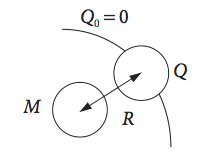
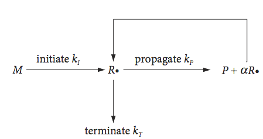
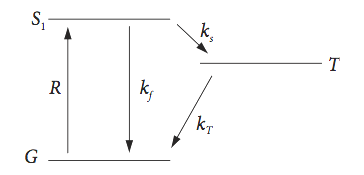

Questions 1 - 23¶
Q1 Phase portrait¶
Calculate the phase portrait for \(\displaystyle \frac{d^2x}{dx^2} - \omega^2x = 0\).
Show by plotting some trajectories that the centre is a saddle point which means that the curvature along the x-axis is the opposite to that along \(v = dx/dt\).
Q2 Solve¶
(a) \(\displaystyle\frac{dy}{dx} = \frac{xy}{1-x^2}\) ,
(b) \(\displaystyle\frac{dy}{dx} = e^x \tan(y)\),
(c) \(\displaystyle\frac{dy}{dx} = e^{x-y}\sin(x)\)
with the initial condition that \(y_0 = c\) when \(x=x_0\).
Q3 Solve \(2A\to B\)¶
Find \(A\) vs. \(t\) for the reaction 2A \(\to\) product.
Q4 Solve¶
(a) Solve equation (7).
(b) Find the time for half the population to be infected if initially, only one individual is infected.
Strategy: (a) To integrate separate variables. The initial condition is \(x = 1\) at \(t = 0\) and the total population is \(N\). (b) The time when \(x = N/2\) is the half life.
Q5 X-ray scattering¶
Show that the fractional scattering of X-rays off a single electron is \(\displaystyle I_s /I_0 = 4\pi\left (\frac{e^2}{mc^2} \right)^2 \)
Q6 Skydiver¶
When the skydiver’s parachute opens we assume that the drag instantly becomes proportional to the velocity squared, i.e. \(kv^2\) where \(k\) is a constant. Calculate the terminal velocity.
Q7 Rate equation¶
If \(x\) moles of a substance A reacts in time \(t\) with another B, it is found that \(x/(a-x) = akt\), where \(a\) is the number of moles of A or B initially preset, \(k\) is the rate constant and at \(t = 0, \,x = 0\). Show that the rate equation for this reaction varies as \((a - x)^2\). What are the units of \(k\)?
Q8 Forming ice¶
A jar of water at \(15^\text{o}\)C is placed in a temperature of \(-12^\text{o}\)C and its temperature falls by \(5^\text{o}\)C in \(8\) minutes. How many minutes will it be before ice could form?
Q9 Sublimation¶
A certain amount of crystalline iodine is dropped into a heated chamber at constant temperature and sublimes to form I\(_2\) vapour. Suppose that the sublimation occurs at a rate that is proportional to the amount of crystalline iodine present at that time. Write down the rate equation for the disappearance of the solid and also the change in pressure \(p\) caused by sublimation. Let \(p_\infty\) be the final pressure when the entire solid has sublimed.
Q10 Fluorescence quenching¶
The Stern - Volmer equation describes the ratio of fluorescence in the presence and absence of a quencher at concentration \(Q\). The excited states behave according to the scheme (4). The additional quenching step is S + Q \(\displaystyle {\stackrel{k_q}\rightarrow }\) G + Q and the Stern - Volmer equation is
where \(k_{SV}\) is a constant and \(\varphi\) is the fluorescence yield in the absence of quencher and \(\varphi_Q\) that in its presence.
(a) Confirm the Stern - Volmer equation and work out what the rate constant \(k_q\) is.
(b) Work out the equivalent equation in terms of the ratio excited state lifetimes not yields, i.e. \(\tau/\tau_Q\).
Strategy: Use steady state conditions to solve the equations.
Q11 Blood alcohol level¶
In the reaction scheme,
\(\qquad\qquad\) A \(\stackrel{k_1} \rightarrow \) B \(\stackrel{k_0} \rightarrow \) C
where \([A]_0 = a, \,[B]_0 = [C]_0 = 0\) suppose that species A decays to B in a first-order process, but B decays by zero order.
(a) Solve the scheme to find the A and B concentration profiles.
(b) In the body, alcohol like many other drugs is ingested rapidly. It is then enzymatically catalysed in the liver, initially to acetaldehyde in a zero-order reaction with rate constant \(k_0 = 0.19\,\mathrm{ g\, dm^{-3} hr^{-1}}\). If you rapidly drink \(70\) g alcohol, or approximately three pints of \(5\)% beer or lager, what is the maximum blood alcohol if the relevant body volume is \(60\) litres, and how long will it take to reach this level?
(c) The maximum level of blood alcohol with which it is legal to drive in England is \(80\) mg/\(100\) ml. How long will it be before this level is reached and how long before no significant alcohol remains? The body volume for a man is about \(0.82\) times his weight and \(0.67\) times that for a woman. Take the rate constant \(k_1 = 5 \,\mathrm{hr^{-1}}\). (See Marshall (1978) for a concise discussion of this topic and others in pharmacokinetics.)
Strategy: The rate of change of a zero-order reaction is a constant and therefore does not depend on the change in concentration of any species. In the body when the alcohol level is high, it reacts at a rate that is independent of the alcohol or enzyme concentration and is therefore zero order. At low concentrations, and hence at long times, this is not true and the reaction scheme breaks down. ( At low alcohol concentration, \(k_0\) can empirically be replaced by \(k_0B/(k_0B + 5\cdot 10^{-5})\), which better represents its behaviour; see Barnes & Fulford 2002).
Q12 Poisoned catalyst¶
A catalytic pellet, made of Pt on an Al\(_2\)O\(_3\) support, is poisoned by one of several sulfur compounds after this has diffused only a small way into its surface. The spherical pellet has a radius \(r_0\), the diffusion coefficient in the pellet is \(D\) and the poison has penetrated to a radius \(r_p\). If the poison has a fixed concentration in solution of \(c_0\), what is its concentration \(c_p\) in the catalyst at radius \(r_p\) if the flux into the pellet is equal to the rate of reaction \(k\cdot c_p\)?
Q13 Diffusion limited reaction¶
The rate of reaction of hydroxyl and of ethyl radicals has been measured in solution, as have those of many other species, and found to be diffusion controlled. The quenching of a molecule M by a species Q had been found to have a rate constant equal to the diffusion controlled value \(k_d\). The Smoluchowski model (Eyring, Lin & Lin 1980) supposes that reaction occurs at a radius \(R_A\) around A, see sketch below. Inside this spherical surface, the concentration of Q is assumed to be zero. Show, assuming that steady state conditions apply and using Fick’s first law, that the diffusion controlled rate constant is \(4\pi DR\) where \(D\) is the sum of the diffusion coefficients of the two species.
Strategy: If M and Q are the concentrations of the species, then the rate of reaction is \(k_2\)MQ. This is equal to the total flux entering the spherical surface of radius \(r\), which is \(J = +4\pi r^2D dQ/dr\), multiplied by the concentration M. The initial condition is that \(c_0\) = 0 at \(r = R\). Calculate \(J\) first then \(k_2\).

Q14 Chain-branching explosion¶
A gas phase chain-branching reaction is stable under some conditions, but can be explosive under others. Chain branching is the cause of the first explosion limit in the H\(_2\)/O\(_2\) reaction.
The general radical chain reaction scheme can be drawn pictorially, as shown in Fig. 9. The initial species M reacts to produce some chain carriers R, which can produce more of themselves, \(\alpha\)R and also the reaction product \(P\). A chain carrier can also be deactivated by reacting with other species or with the walls of the reaction vessel, both of which lead to termination. The branching number \(\alpha\), must be greater than unity if branching is to occur, because by definition the propagation step produces one radical as well as product, e.g. R + M \(\to\) R + product. In the H\(_2\)/O\(_2\) reaction the branching steps are,
so that one radical H or O produces an extra one making \(\alpha = 2\). The rate of reaction is the radical concentration multiplied by the propagation rate constant, \(k_pR\).
Using Fig. 9, write down \(dR/dt\) and integrate this equation to find the radial population \(R\cdot\) vs time, assuming that no radicals are present at \(t = 0\). Show that explosion occurs when the rate of branching is greater than the rate of termination, as might be anticipated, and, if not, that a steady state is reached.

Fig. 9 Chain branching; \(P\) is the product; \(R\) is the radical chain carrier.
Q15 Iodine recombination¶
The recombination of iodine atoms after the photo-dissociation of molecular iodine in the presence of inert buffer gas, was one of the first reactions followed by Porter using the technique of flash photolysis he had invented and for which he won a share of the Nobel Prize in Chemistry (Porter 1967; Christie et al. 1952; Porter & Smith 1961; Phillips & Barber 2006). This technique uses a flash of light to initiate a reaction followed by a second weaker flash at a predetermined time to probe the species produced.
The first observation made was that the reciprocal pressure of iodine atoms increased linearly with time as they recombined at a constant buffer gas pressure and the second was that as the temperature was raised that the recombination rate constant decreased, i.e. the reaction had negative temperature dependence and hence the experimentally measured activation energy was negative. The scheme proposed was
where the species IM is a complex formed between the iodine atom and the buffer gas due to van der Waals intermolecular forces. The stronger the forces are the greater the chance of forming a complex. The photolysis flash is far shorter than any reaction time and so the production of I atoms from I\(_2\) was considered as instantaneous and was ignored in the reaction scheme.
(a) Solve this scheme and find the rate of change of iodine molecules vs. time by assuming that the equilibrium with complex IM is rapid. Rearrange the result so that a straight-line plot can be made.
(b) Explain the negative activation energy by assuming that each rate constant can be described by an Arrhenius equation.
Strategy: Assume that IM is at steady state and use this to simplify and then integrate the rate equation.
Q16 Glucose mutarotation¶
The mutarotation of glucose in water or the racemisation of biphenyls are reversible unimolecular reactions with the scheme \(\displaystyle A \underset {k_{-1}}{\stackrel{k_1} \rightleftharpoons} B\). Transitions in membrane proteins also follow this scheme if the transitions are induced by a voltage, and then A and B indicate states when the protein is open or closed to the passage of ions. If \(a\) and \(b\) are the initial amounts of A and B respectively and \(x\) the amount of A reacted at time \(t\),
(a) Calculate the change in A as equilibrium is reached.
(b) Express your result is terms of the equilibrium amount of \(x\), which is \(x_e\).
(c) If the optical rotation \(\alpha\) is measured with time the final value being \(\alpha_\infty - \alpha_0\), express the answer in terms of the difference in optical activity \(\alpha_t - \alpha_0\) if \(\alpha_0\) is that initially measured. Show that the units of the measuring parameter \(\alpha\) do not matter. This is always the case for a first-order reaction.
(d) Instead of starting with an excess of A, suppose that equilibrium has been reached and this is perturbed by a small amount \(x\) caused by heating the sample by a few degrees with a laser or electrical pulse whose duration is shorter than the relaxation time back to equilibrium. Use the same rate expression as in (a) but substitute for \(\Delta = x - x_e\) to obtain \(d\Delta x/dt = \cdots\) then integrate to find \(\Delta x\).
(e) If a voltage \(V\) is applied across a membrane such that it is zero at the centre, show that the first-order rate constant for a protein opening and closing is a minimum when \(V = 0\). The barrier height is changed by the application of a voltage, and then the rate constants have the form
where \(E_0\) is the barrier in the absence of the potential. A typical voltage is \(100\) mV across a membrane of \(50\) nm width, which is equivalent to \(2\) MV m\(^{-1}\). In converting to energy, this becomes a barrier of \(0.1 \mathrm{eV \cdot 96.4 \,kJ \,mol^{-1} eV^{-1}} \approx 9.6\,\mathrm{ kJ \,mol^{-1}}\) across the membrane. This is comparable to the barrier (activation energy) for a hydrogen bond, but larger than thermal energy at room temperature which is \(RT \approx 2.5\,\mathrm{ kJ\, mol^{-1}}\).
Strategy: Let \(x\) be the amount of A consumed at time \(t\) and use this to calculate the loss in A and the increase in B.
Q17 Relaxation method¶
In the relaxation methods of studying chemical kinetics, the reaction at equilibrium is perturbed by a small amount and the return to equilibrium under the new conditions followed. In one method, water is heated up to a few degrees above room temperature by an infrared laser pulse of nanosecond duration, and the equilibrium
is thereby perturbed by a small amount. Let a be the initial concentration of water and \(x\) that of the ions produced. Show that the relaxation back to equilibrium is first-order.
Strategy: Let \(x\) be the amount of water dissociated or ions produced, and write down \(dx/dt\). Then to allow for a small change let \(\Delta x = x - x_e\) where \(x_e\) is the equilibrium concentration of ions, and substitute this into the rate equation to find \(d\Delta x/dt\). Assume \(\Delta x^2\) is small compared to \(\Delta x\) and \(x_e^2\).
Q18 Catalysis¶
There are many different classes of catalytic reactions. An important set of reactions is the Michaelis - Menten scheme S + E \(\rightleftharpoons\) SE \(\to\) P + E. The enzyme E catalyses the substrate S to form product P and is returned to its active state. The classic example is trypsin produced from trypsinogen. This scheme cannot be solved analytically, except at steady state, but is easily solved numerically, see Chapter 11.
Simpler catalytic reaction schemes are found between acetone and iodine in an acidic solution, or Ru\(^{2+}\) oxidized by acidic bromate ions containing traces of BrO\(_2\). The stoichiometry for the reaction of acetone is
and the reaction proceeds by rapidly protonating the oxygen atom. This species then rearranges, losing a proton and reacting with iodine. The experimental rate expression is \(d[acetone]/dt = -k[acetone][H^+]\). As both the ruthenium and acetone reactions are autocatalytic, the product acts to accelerate the reaction.
The general autocatalytic reaction of species A with catalyst B is A + B \(\to\) P + 2B and the rate equation is deceptively simple and is \(da/dt = -kab\) if \(a\) and \(b\) are the concentration A and B.
(a) Write down and solve the general autocatalytic scheme if the concentration of A is \(a_0\) and of B is \(b_0\) initially. Plot the graphs of A and B concentrations if \(a_0\) = 1, \(b_0\) = 0.005, and \(k\) = 0.05.
(b) Sketch the phase portrait and characterize the equilibrium points as stable or unstable.
Q19 Population growth¶
The Gompertz population growth law appears to be good at describing the growth of tumours (Strogatz 1994). The rate of change of the size \(n\) of a tumour (as number of cells) is represented as
(a) Solve this equation, show that the tumour size is self-limiting, and suggest what the constants represent.
(b) Plot the graph in dimensionless units; \(n/n_0\) vs \(kt\) with two initial populations, one above and one below the long-time value.
(c) Two interacting populations (or chemical species) A and B, change according to the rate equations
where A and B represent the populations at time \(t\). Show that these equations will produce the Gompertz equation.
(d) If, instead of a population, B is the tumour growth rate (1/time), then \(k_1\) is the constant (1/time) describing its retardation and \(B_0\) the initial rate. (Note that B is here a rate ‘constant’ that changes in time. This may seem strange but time-dependent rate constants also appear naturally in diffusional quenching of molecules in solution.)
Variable \(A\) now represents the number of cells in the tumour at time \(t\) and the constant \(k_2\) is irrelevant and can be set to unity. Using your answer to (c), conclude what the condition is, in terms of \(k_1\) and \(B_0\), for the tumour to shrink in size.
Strategy: (a) try the substitution \(\displaystyle n/a = e^u\).
Q20 Births & deaths¶
Rate equations can be used to study populations of all sorts of animals, fish, or bacteria. Suppose that a number of creatures \(N\) are born with a rate constant \(k_1\) (time\(^{-1}\)) but die with a rate constant that has a value that is not only dependent on the rate of natural deaths \(k_2\) but also on the number of animals \(k_3N\). The units of \(k_2\) are the same as \(k_1\), and \(k_3\) are number\(^{-1}\,\mathrm{ time^{-1}}\). The factor \(k_3N\) represents death caused by ‘crowding’ which is not meant literally, but is due to competition for resources or shelter and so forth. There are \(N_0\) animals are present initially.
(a) Write down the rate equation and work out the steady state conditions. (The rate equation produced is called the logistic equation and should not be taken too literally when describing animal populations, but used as a starting point; see Strogatz 1994).
(b) Solve the rate equation for the population at time \(t\). Plot several curves of the solution with the rate constants, such as \(k_1 = 2,\, k_2 = 1\) (unit: 1/time), \(k_3 = 0.001\) (unit: number\(^{-1}\,\mathrm{ time^{-1}}\)) and \(N_0\) from \(200 \to 2000\) to investigate the properties of this equation. Why does \(k_3\) have to be far smaller than the other rate constants?
(c) When the animals are harvested with a rate constant \(k_h\), (number / time), which is independent of the number present, the population may collapse or recover, depending on how aggressive the harvesting is relative to the initial number present. Write down the rate equation and plot the phase portrait and also that for part (a).
Use the parameters above with \(k_h = 200\). Calculate the steady state populations, and in both cases locate them on the phase portrait and also add them to a plot of population vs time. This model will produce negative populations under some conditions, which is of course wrong. Strogatz (1994, Chapter 3) describes a modification that overcomes this.
(d) Solve the rate equation in the presence of harvesting using python to perform the integration as it is complicated. The algebraic result can be simplified although this is not necessary to be able to plot graphs of the population vs time. Use the parameters above and initial populations starting at \(100\) and increasing to \(1000\). Barnes & Fulford (2002) give several more examples describing the change of animal populations and a more detailed analysis is given by Strogatz (1994).
Strategy: The rate of population change is the difference in that due to an increase and decrease in the population. The steady state conditions are found when the rate of change is zero. The phase portrait is the plot of \(dN/dt\) vs \(N\); see Section 1.6.
Q21 Triplet-Triplet annihilation¶
A solution of an aromatic molecule in its electronic ground state G is excited by a pulse of light, and its first excited singlet state S\(_1\) is produced. Some of these molecules fluoresce while others form triplet states via intersystem crossing. The triplet excited state T, is far longer lived than the singlet, typically by 1000 times. In solution, the triplets can annihilate one another after diffusing together and this can make measuring the correct triplet lifetime difficult. The scheme is
where \(k_a\) is the second order annihilation rate constant, \(k_f\) is the first-order rate of fluorescence, and \(k_s\) that of forming the triplets T via intersystem crossing. The triplets also decay with a rate constant \(k_T\), which is the sum of phosphorescence and non-radiative decay rate constants back to the ground state G.
In the antennas of photosynthetic organisms, intense laser excitation can cause singlet - singlet annihilation S\(_1\) + S\(_1 \to\) S\(_1\) + G and this is due to energy migration among the (chlorophyll) pigments. This process can be used to estimate the rate of energy migration that is otherwise hard to obtain. We will assume, however, that the S\(_1\) states are too short lived and the excitation intensity too low for this to be a significant process and it can be ignored.
Write down the full rate equations for S\(_1\) and T\(_1\) in this scheme, but solve only for the triplet population by assuming that S\(_1\) has decayed to zero before any significant T-T annihilation occurs. Take the initial concentration of excited singlet states as S\(_0\) and triplets T\(_0\) and show that the triplet population is
Plot T vs time if \(k_a =10^9\,\mathrm{ dm^3\, mol^{-1}\, s^{-1}}\), and \(k_T =10^2 \to 10^4\,\mathrm{ s^{-1}}\) and \(T_0 = 10^{-4}\,\mathrm{ mol\, dm^{-3}}\). Show that at long times the decay is first-order and \(k_T\) can be measured, and that at short times the decay is second order.
Q22 Continuous excitation¶
A solution of aromatic molecules is continuously excited by visible light at a rate \(R\)a and a small population \([S_1]\) of the molecule’s its excited singlet state is produced. \(R = I_{abs}\sigma[G]\) where \(I_{abs}\) is the light intensity, \(\sigma\) the absorption cross section, and [G] the ground state concentration. The state \(S_1\) decays to a triplet state T in a process called intersystem crossing with rate constant \(k_S\), and fluoresces with rate constant \(k_f\). The triplet decays back to the ground state with rate constant \(k_T\).
Solve the scheme for singlet (\(S_1\)) and triplet populations. The scheme is shown in the sketch, Fig. 10. The initial populations at \(t\) = 0 are \(S_1(0) = S_0, \, T(0) = 0\).
Strategy: Write the rate equations in the usual way accounting for loss and gain for each species. Solve the equation for \(S\), substitute the result into that for \(T\) and use the integrating factor method.

Fig.10 Singlet - triplet scheme.
Q23 Laser pulse excitation¶
If a laser pulse of duration \(I(t)\) initiates a reaction in a molecule A with rate constant \(k_S\), then the rate of change of A can be written as \(\displaystyle \frac{dA}{dt} = k_aI(t) - k_S A\). If the initial amount of A is \(A_0\), solve this equation,
(a) when the pulse is so short it can be considered as a delta function \(I(t) = I_0 \delta(t - t_0)\) where \(I_0\) is the instantaneous intensity at time \(t_0\), and
(b) with an exponential pulse, \(I(t) = I_0e^{-at}\). Discuss the effect of a short and long duration pulse.
Strategy: Use the integrating factor and you will need \(\int f(x)\delta(x-x_0)dx = \delta(x_0)\) where \(f\) is a function and \(\delta\) the delta function.